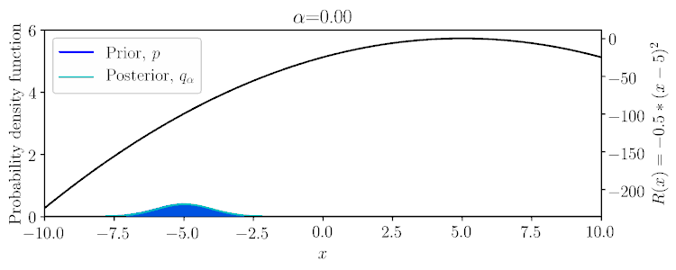
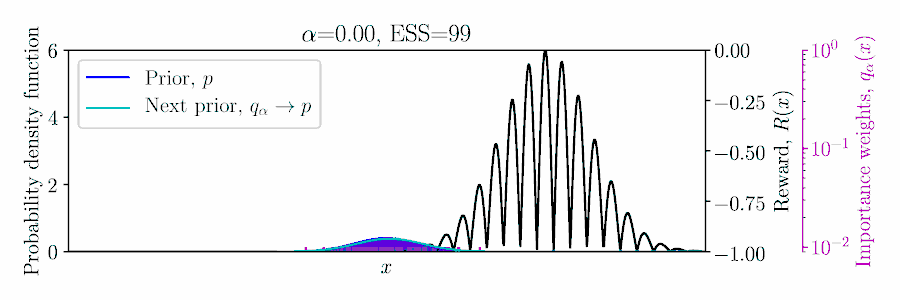
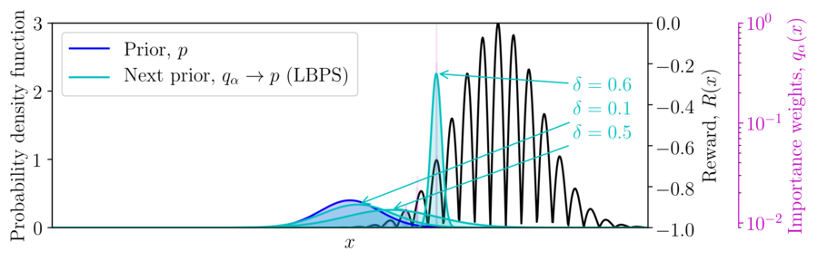
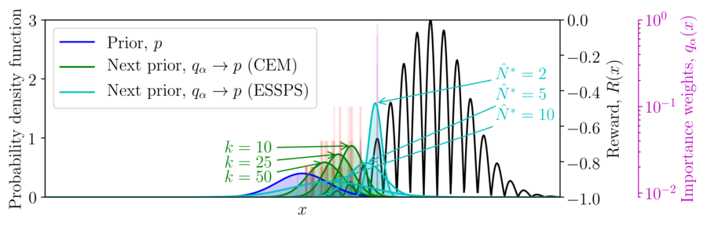
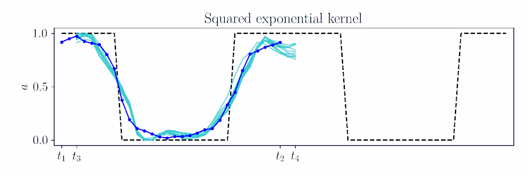
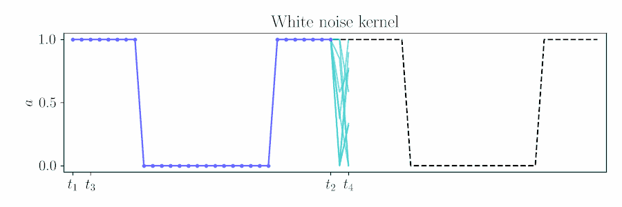
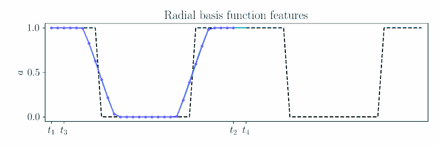
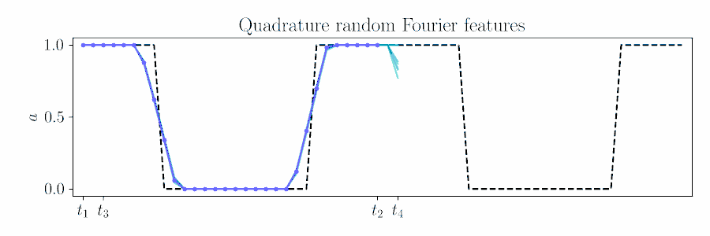

Inferring Smooth Control:
Monte Carlo Posterior Policy Iteration with Gaussian Processes
Conference on Robot Learning, 2022
Monte Carlo methods are popular for Robot Learning control problems, as they allow us to optimize non-differentiable, non-convex problems and scale to high-dimensional spaces. For settings such as open-loop control and tracking tasks, they have been adopted for reforcement learning and model predictive control (MPC).
This work takes the inference perspective to optimize smooth control priors in a principled fashion, by taking the approximate inference error into account during optimization.
This work concerns posterior policy iteration in the episodic control setting.
Given state action trajectories \(\mathbf{S} = \{\mathbf{s}_1, \mathbf{s}_2, \dots\}\), \(\mathbf{A} = \{\mathbf{a}_1,\mathbf{a}_2, \dots\}\), the policy is updated using the episodic return
\(R=\sum_t r(\mathbf{s}_t,\mathbf{a}_t)\),
$$q_\alpha(\mathbf{A}|\mathbf{S}) \propto \exp(\alpha \textstyle\sum_t r(\mathbf{s}_t,\mathbf{a}_t))\,p(\mathbf{A}|\mathbf{S}).$$
This optimization is repeated by setting \(p(\mathbf{A}|\mathbf{S}) = q_\alpha(\mathbf{A}|\mathbf{S})\), so it requires either conjugate updates or a form of variational inference, such as expectation maximization (EM).
An important aspect to these methods is the inverse temperature \(\alpha \in \mathbb{R}_+\).
Within the possible range of values for \(\alpha\), \(q_\alpha\) can vary between the prior \(p\) to potentially a delta function on a mode of the reward.
Considering a Gaussian prior \(p(x)\) and quadratic reward \(R(x)\), the posterior \(q_\alpha(x)\) can be computed in a conjugate fashion, as shown below and in Example 1 of the paper.

In the non-conjugate setting, many methods perform a stochastic approximate EM scheme, with an importances weighted posterior using samples from the prior, and moment matching the weighted samples to update the prior for the next EM iteration,

To set \(\alpha\) appropriately in the Monte Carlo setting, balancing greediness and uncertainty, we propose optimizing a lower bound on the expected return of the posterior \(q_\alpha\) based on the importance sampled estimate using the prior, \(\mathbb{E}_{q_\alpha/p}[R]\),
$$\max_\alpha \mathbb{E}_{q_\alpha/p}[R] - ||R||_\infty\sqrt{\frac{1-\delta}{\delta}\frac{1}{\hat{N}_\alpha}},$$
where \(1-\delta \) is the probability of the concentration inequality and \(\hat{N}_\alpha\) is the effective sample size (ESS), computed from the importance weights.
Lowering the probability of the bound increase the greediness of the optimization.

We refer to this method as lower-bound policy search (LBPS).
While LBPS using the ESS as a penalty term, we can also specify a desired ESS \(\hat{N}^*\). This resembles the number of elites used in the cross-entropy methods (CEM), although the importance weights are more conservative.
We refer to this method as effective sample size policy search (ESSPS).

By ensuring a suitable ESS during optimization, we are able to work with richer priors for control that capture the correlations between actions, without over- or underfitting during optimization.
Gaussian Process Policies
For control, naive action sequence priors such as independent Gaussian noise return rough actions sequences for robot control, when we desire some degree of smoothness for safety and effective exploration.
For smooth actions, we can use a Gaussian process (GP) to model open-loop actions \(\mathbf{A}\sim\mathcal{GP}(\mathbf{\mu},\mathbf{\Sigma})\) using a smooth kernel like the squared exponential (SE). The paper describes how we can use an online version of PPI for MPC by updating the action sequence for a new time window given the prior's kernel.
The figure below animates Figure 2 of the paper, showing a time window shift of a trajectory optimized between \([t_1, t_2]\) to being sampled between \([t_3, t_4]\) by using Equation 6.

Contrast with an independent Gaussian noise prior, which does not incorporate smoothness and performs unstructured exploration.

For long time sequences, we motivate features approximations to sparsify the GP.
Finite features can lower the dimensionality of the problem, but approximate the nonparametric GP, e.g. the zero mean prior and stationarity.
For the SE kernel, using the canonical radial basis function (RBF) features closely matches the probabilistic movement primitive used in policy search,

We also motivate quadrature random Fourier features (RFF) as a spectral approximation to the SE kernel.

With these richer Gaussian processes priors, we can perform smooth control using Monte Carlo PPI for reinforcement learning and MPC.
Policy Search Results
Episodic Relative Entropy Policy Search
Quadrature Random Fourier Features
Radial Basis Function Features
Lower Bound Policy Search
Quadrature Random Fourier Features
Radial Basis Function Features
Effective Sample Size Policy Search
Quadrature Random Fourier Features
Radial Basis Function Features
Model Predictive Control Results
Model Predictive Path Integral Control (Independent Gaussian Noise)
For the feature-based policies, the cost of the finite-features approximation for MPC can be seen in the manipulation tasks, where the rewards are sparse after task completion and features do not achieve the desired zero-mean prior. They also require more samples to achieve the tasks.
Lower Bound Policy Search (Quadrature Random Fourier Features)
HumanoidStandup-v2 (128 rollouts)
door-v0 (128 rollouts)
hammer-v0 (128 rollouts)
Lower Bound Policy Search (Radial Basis Function Features)